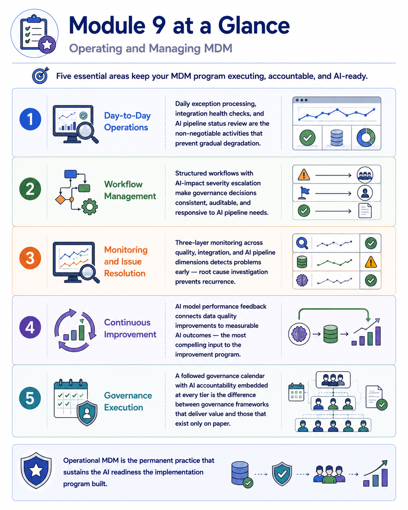
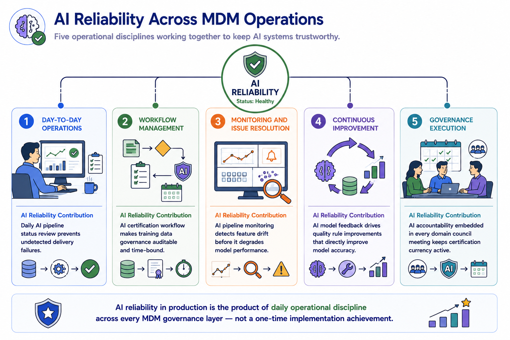
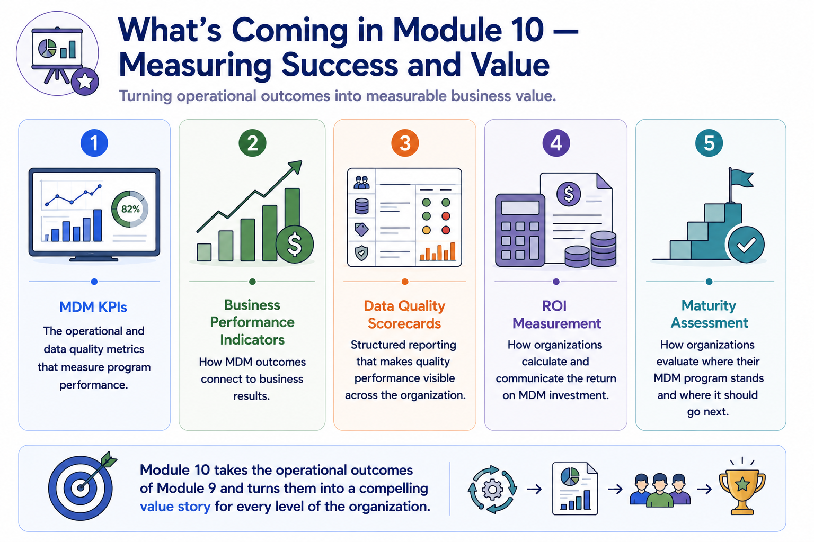

Module Recap
Module support notes
What This Module Covered
The through-line of this module is that operational excellence in MDM is inseparable from AI reliability. Every operational discipline covered — daily monitoring, workflow management, continuous improvement, governance execution — has a direct and specific consequence for the AI systems that depend on governed data.
Organizations that treat MDM operations as a data management maintenance function and AI reliability as a separate AI operations concern consistently find that the two degrade together when governance lapses, because the root cause is the same: ungoverned, unmonitored, unimproved master data producing unreliable AI outputs.
- Day-to-Day Operations — daily exception processing, integration health checks, and AI pipeline status review are the non-negotiable activities that prevent gradual degradation
- Workflow Management — structured workflows with AI-impact severity escalation make governance decisions consistent, auditable, and responsive to AI pipeline needs
- Monitoring and Issue Resolution — three-layer monitoring across quality, integration, and AI pipeline dimensions detects problems early; root cause investigation prevents recurrence
- Continuous Improvement — AI model performance feedback connects data quality improvements to measurable AI outcomes, the most compelling input to the improvement program
- Governance Execution — a followed governance calendar with AI accountability embedded at every tier is the difference between governance that delivers value and governance that exists only on paper

The AI Operations Thread Through Module 9
The AI reliability thread through Module 9 is the most operationally granular of any module — because it is in daily operations that AI reliability is either sustained or eroded. The AI pipeline status check that catches a three-day delivery failure before the fraud detection model acts on stale data. The exception workflow that escalates a completeness decline to an AI model owner within four hours of detection. The monitoring alert that identifies feature drift six weeks before it would have been noticed through model performance complaints.
Each of these is a specific, daily operational action that either does or doesn't happen — and the cumulative effect of those actions over months and years is what determines whether AI systems built on MDM governance remain reliable or gradually degrade.
Note
AI reliability in production is the product of daily operational discipline across every MDM governance layer — not a one-time implementation achievement. Every discipline has a specific AI reliability contribution: Day-to-Day Operations prevents undetected pipeline failures; Workflow Management makes AI certification auditable; Monitoring detects feature drift early; Continuous Improvement raises the quality floor that AI models depend on; Governance Execution keeps AI certification currency active through every domain council meeting.

Preparing for Module 10
Module 10 provides the measurement and communication framework that makes everything covered in Module 9 visible as organizational value. Operational disciplines generate quality improvements, AI performance gains, and efficiency savings — but those improvements only drive organizational investment decisions when they are measured, reported, and communicated in terms that business leaders recognize and care about.
The KPIs, scorecards, ROI frameworks, and maturity assessments covered in Module 10 are the instruments that translate operational MDM performance into the business value narrative that sustains executive sponsorship, justifies program expansion, and makes the case for MDM as the data infrastructure every AI initiative depends on.
Tip
As you move into Module 10, carry the operational data from Module 9 forward as your measurement baseline. KPIs and scorecards are only meaningful when compared to a starting point — and the operational metrics established in Module 9 provide exactly that. The most compelling value stories in Module 10 are the ones that show how AI model performance improved as operational MDM quality improved, measured from a documented pre-improvement baseline.

Operational MDM is not a collection of separate practices — it is a system that keeps governed data and AI systems reliable together, every day.
![A circular operations diagram showing all five disciplines functioning as a continuous system: Day-to-Day Operations feeding Monitoring with current status data; Monitoring feeding Workflows with detected issues; Workflows feeding Continuous Improvement with resolved exception patterns; Continuous Improvement feeding Governance Execution with updated rules; Governance Execution feeding Day-to-Day Operations with current standards. An AI reliability indicator at the center is sustained by all five disciplines operating together.](../assets/m9-recap-infographic.png)